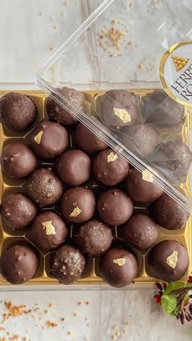

Moja beleška
SačuvanoSastojci
- Sastojci
Priprema
1. U secku sameljite pečene lešnike i posne napolitanke dok ne dobijete sitnu smesu. 2. U posudi sjedinite mlevene lešnike i napolitanke sa posnim kremom. Dobro izmešajte dok ne dobijete kompaktnu smesu. 3. Smesu stavite u frižider na nekoliko minuta da se stegne. 4. Formirajte kuglice željene veličine (oko 20 g po kuglici) i ređajte ih na tacnu. Ponovo ih ohladite u frižideru nekoliko minuta. 5. Za dodatno bogat i hrskav ukus – svaku kuglicu pre umakanja u čokoladu provucite kroz sitno seckani pečeni lešnik (opciono). 6. Rastopite crnu čokoladu i dodajte 2-3 kašike ulja kako bi glazura bila glatka. 7. Umakati ohlađene kuglice u čokoladu, ređati ih na papir za pečenje, pa ih vratiti u frižider da se čokolada stegne. Dodatni savet: Kako bi se kuglice lakše oblikovale, nakvasite ruke prilikom formiranja.
Originalni opis sa Instagrama
Posne Ferrero Rocher kuglice ✨ Jednostavan i ukusan recept koji će oduševiti sve! Ako želite slatkiš koji se brzo sprema, prelepog je ukusa i izgleda, ove posne kuglice su pravi izbor. Iz ove mere dobijete čak 40 kuglica od po 20 grama! Sastojci: • 200 g pečenih lešnika • 200 g posnih napolitanki • 350 g posnog krema • 200 g crne čokolade • 2-3 kašike ulja Priprema: 1. U secku sameljite pečene lešnike i posne napolitanke dok ne dobijete sitnu smesu. 2. U posudi sjedinite mlevene lešnike i napolitanke sa posnim kremom. Dobro izmešajte dok ne dobijete kompaktnu smesu. 3. Smesu stavite u frižider na nekoliko minuta da se stegne. 4. Formirajte kuglice željene veličine (oko 20 g po kuglici) i ređajte ih na tacnu. Ponovo ih ohladite u frižideru nekoliko minuta. 5. Za dodatno bogat i hrskav ukus – svaku kuglicu pre umakanja u čokoladu provucite kroz sitno seckani pečeni lešnik (opciono). 6. Rastopite crnu čokoladu i dodajte 2-3 kašike ulja kako bi glazura bila glatka. 7. Umakati ohlađene kuglice u čokoladu, ređati ih na papir za pečenje, pa ih vratiti u frižider da se čokolada stegne. Dodatni savet: Kako bi se kuglice lakše oblikovale, nakvasite ruke prilikom formiranja. Kada se čokolada stegne, kuglice su spremne za uživanje! Divno izgledaju, a još lepše se tope u ustima. Uživajte i javite mi utiske! 🍫✨ • • • #sitnikolaci #kolacici #fererro #posnikolaci #recepti #brzoilako #ukusno #ukusnahrana